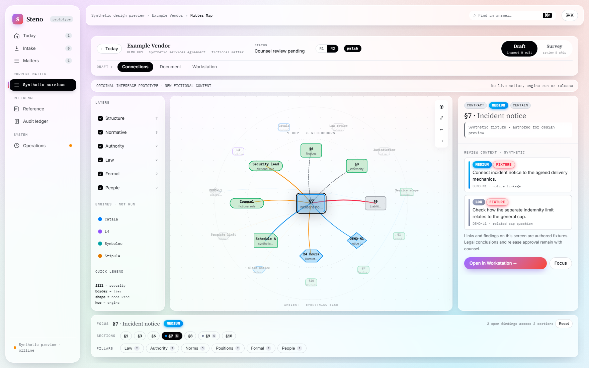

Steno · Legal workflows
A contract workstation that keeps its context.
A workspace for following a contract question across the clauses that matter. Explore the original design, then a separate example of two drafting checks.
Explore the case study